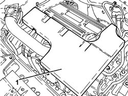
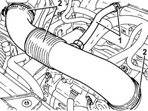
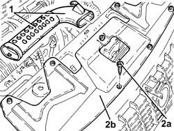
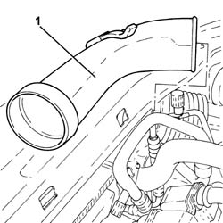

1048A21 FILTER AIR INTAKE HOSE - R.R.
- Path
- Procedures > 10 ENGINE > 1048 ENGINE AIR SUPPLY CIRCUIT > 1048A VACUUM AIR CIRCUIT > 1048A21 FILTER AIR INTAKE HOSE - R.R.
- Kind
- repair procedure (removal / refitting; the operation number is the code)
- Applies to
- engines: 2.2; all production periods
- Interactive page
- https://sloeber94.github.io/elrnDB-fCrm/en/#/194000305
Applies to: engines: 2.2; all production periods
 Removing
Removing
 Refitting
Refitting1. Remove the sound insulation cover fastened to the engine by three pins.

Applies to: engines: 2.2; all production periods
1. Loosen the band and disconnect the engine oil vapour recovery pipe from the cylinder head cover.
2. Loosen the bands and remove the air supply hose from the air flow meter to the throttle casing.

Applies to: engines: 2.2; all production periods
1. Remove the cold air intake complete with protective half-casings.
2. Undo the bolts (2a) and remove the upper radiator crossmember guard (2b).

Applies to: engines: 2.2; all production periods
1. Disconnect the air intake hose from the intake to the filter and remove it.

Applies to: engines: 2.2; all production periods
Refitting
Removing- Place the air intake hose from the intake to the filter in position.
- Place the upper radiator crossmember guard back in its housing and secure it using the bolts.
- Place the cold air intake complete with protective half-casings in its housing.
- Place the air supply hose from the air flow meter to the throttle casing back in its housing and secure it using the bands.
- Connect the engine oil vapour recovery pipe to the cylinder head cover and secure it using the band.
- Place the sound insulation cover back in its housing and secure it to the engine using the three pins.
- Remove the vehicle from the lift.